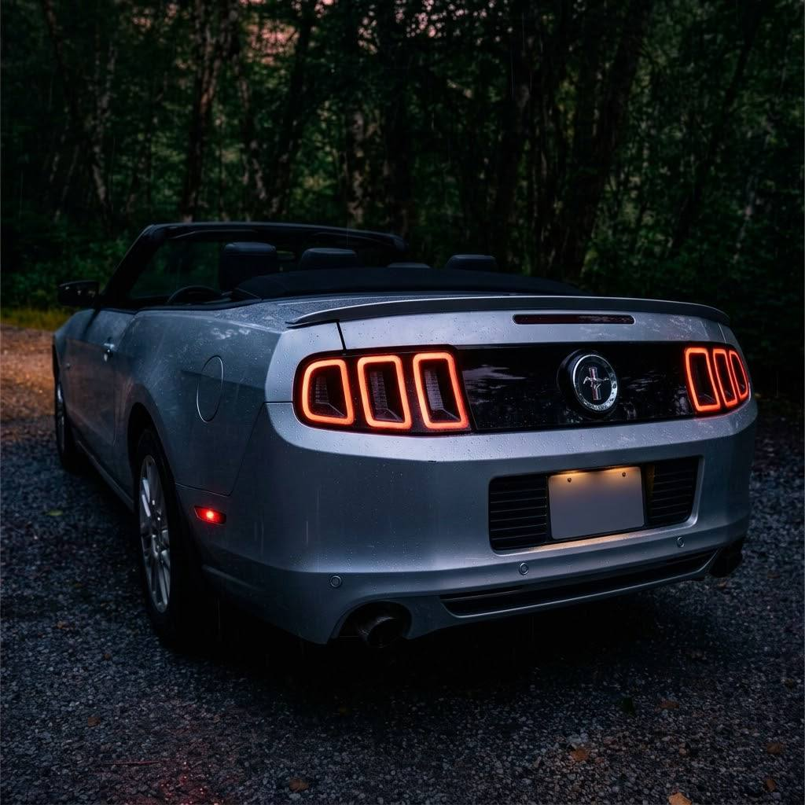

The Ford Mustang S197 II is a generation of the Ford Mustang that was produced from 2010 to 2014. It was based on the Ford S197 platform and featured a more modern design and improved performance compared to its predecessor. Ford re-used the S197 platform and facelifted it in order to save costs and avoid the risk of a new model being made. The 2013 - 2014 models were admired for their refined exterior and interior design and offered enhanced technology and comfort features.
| Model | Years | Notes |
|---|---|---|
| Shelby GT500 | 2010-2014 | The Shelby GT500* was a high-performance specialty variant of the S197 II Mustang, featuring a "Supercharged 5.4L" engine (for 2010-2012) and a supercharged 5.8L V8 "Trinity" engine (for the 2013-2014 models), producing over 600 horsepower. It was designed for people who were seeking maximum performance and track capabilities. |
| Boss 302 | 2012-2013 | The Boss 302 was another specialty variant of the S197 II Mustang, featuring a naturally aspirated 5.0L V8 "Coyote" engine producing 444 horsepower. It was designed for people who were seeking a balance of performance and track-focused drivability. |

This is my 2014 Ford Mustang, it has the well-known 3.7 Cyclone V6 Engine. Driving this car has been a blessing, I feel connected to it, and I always try to find a reason to drive it; therefore, the gas mileage isn't the best, but it's worth it for the driving experience. My main goal was to get the S550 (6th generation)* Mustang, that had all the premium features, but the units that could fit my budget were either base models or beaten and high mileage 4 cylinder units, which having a high mileage 4 cylinder turbo* engine could mean that it could become a potential headache. After searching a while, I found this car, where it had a great condition, and mileage. It was also a Pony Package premium trim where it did have the features that I was initially attracted to; therefore, I went to Victoria to pick up the car. This car holds a very special value for me, and I am very thankful that it entered my life, I also felt like it deserved its own mention in this website.